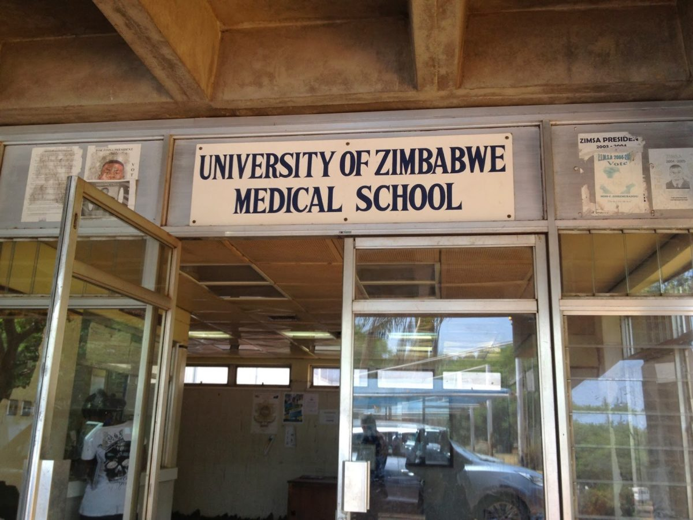

About the Faculty Of Health and Medical Sciences
A brief overview of the Faculty:
- Our Mission, Vision and Values
- Our History
- Our Departments
- Student Life and Research and Innovations
- Contact Information
Our Mission and Vision and Values
Our Mission as the University is to provide all the tools and pave the way for individuals to better our Health Sector so as to not benefit that sector but also benefit the country as a whole. This mission paves the way for college students to have the patriotism as required by studying to their hearts content and also fulfill their dreams.
The Vision of our Institute is to make sure that our Institute produces the highest number of "graduates" of the health and medical sciences department. This vision is to secure not only the Institutes dominence but also the gaurantee of the increased numbers of doctors, nurses, biomedical engineers and so many other professionals.
The values we uphold as the University of Zimbabwe are to bring we taught professionals, and we do this but teaching them various things which make them socially accepted. We have done this by introducing modules like heritage, SDLS [Student Development Life Skills] which teach them the norms and values as well as patiotism and also how to blend in the community. In SDLS they take part in activities like community service which grooms them to take responsibilty as well as socially interact with people
Our History
Established in the year 1980, the Faculty of Health and Medical sciences has a rich history of academic excellence and innovation. As it is in the records the University of Zimbabwe is one of the first established university's in Zimbabwe following the independance of Zimbabwe. Ever since it is and currently is the best University in Zimbabwe. Over the years, we have grown and evolved to meet the the changing needs of the healthcare industry and society.
Our Departments
The Faculty comprises of several departments, including Medicine, Nursing Sciences, Pharmacy, Biomedical Engineering [Which is a recently introduced program] and others. Each department offers a range of undergraduate and postgraduate programs designed to equip students with the knowledge, skills, and attitudes necessary for success in their chosen careers.
Research and Innovations and the Student Life of a student
The University of Zimbabwe indulges in research, it has developed a system which allows the students to take part in researches which are beneficial for both the institute and also the students. It provides the facilities may it be in drug discovery, tissue engineering and many more. Part of the University infrastructure there is also the Innovation where bright young minds are given the opportunity to showcase their wildest inventions.
The life of the student is recognised to be partially fun, why because the faculty requires focussed young individuals who are to deal with real people after they graduate.
Contact Details
Postal Address:
- P.O Box MP167
- Mt Pleasant
- Harare, Zimbabwe
You can contact us on the following:
- Our page: www.uz.ac.zw
- Email: admin@uz.ac.zw
- On our Facebook page: The University of Zimbabwe
- Our Mobile number: +263 242 303 211 / +263 242 303 240